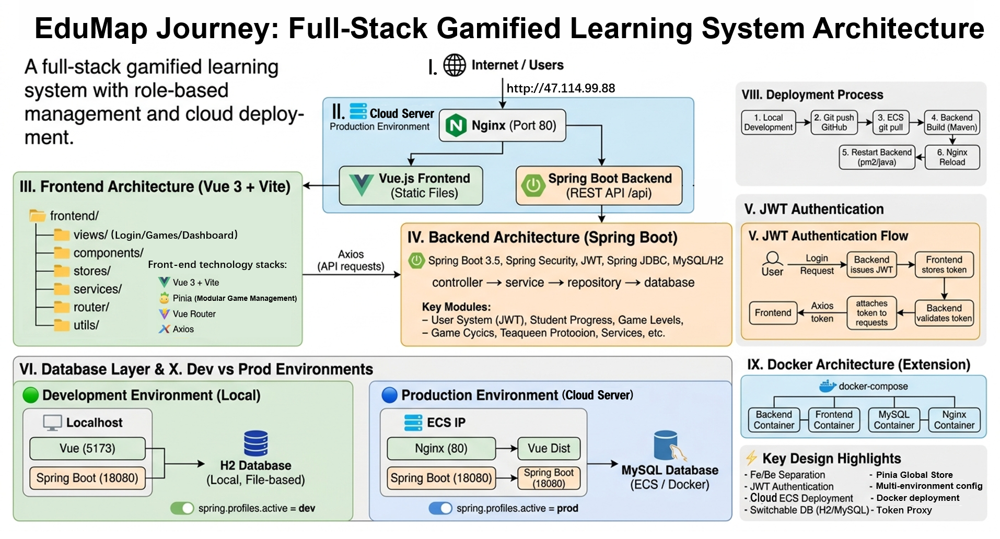

System Architecture
A full-stack prototype architecture supports a clear, testable coursework system
The final system combines a Vue frontend, Spring Boot backend, JWT authentication, cloud deployment, and a portfolio layer that explains how the prototype was designed, tested, and evaluated.

Content Layer
Case-study sections, evidence summaries, and future asset slots.
Presentation Layer
Responsive CSS system using reusable cards, grids, and section styles.
Asset Layer
Journey maps, persona boards, sketch boards, prototype exports, and contribution evidence.
User input and interaction states are translated into progress evidence
Input Capture
The student-side interface collects profile choices, planning-stage selections, task clicks, reward actions, and progress updates. These inputs drive personalised stage guidance, quest status, and feedback messages.
Interaction State
User progress is represented through visible states such as unlocked map nodes, completed quests, earned XP or coins, material crafting progress, and deadline-related task status.
Advisor View
The teacher-side dashboard summarises student progress, engagement, and reward redemption status so advisors can identify students who may need timely support.
index.htmlholds the complete single-page portfolio structure.style.cssdefines the visual system, component styling, and responsive layout.persona/,JourneyMap/, andassets/images/provide the current visual assets.